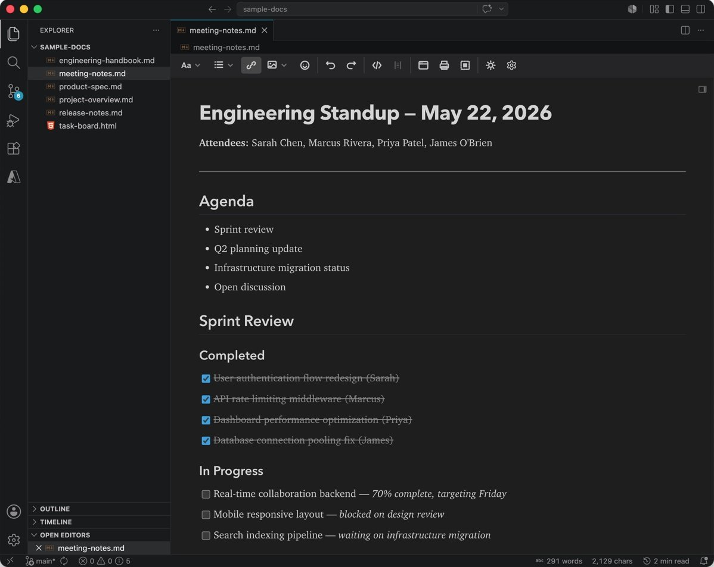

MikeDown Desktop
A free app for macOS and Windows, with a Linux preview. Double-click a .md file or open a folder of notes: tabs, split panes, search across files, version history and export.
MikeDown is a free WYSIWYG markdown editor. You edit the formatted page; the file stays plain markdown. Use it as a desktop app, in VS Code, or inside your own web app.

The same editor and the same markdown everywhere. Pick the one that fits where you write.
A free app for macOS and Windows, with a Linux preview. Double-click a .md file or open a folder of notes: tabs, split panes, search across files, version history and export.
Your .md files open as formatted documents in editor tabs, right next to your code, your Git history and the extensions you already use.
<mikedown-editor> drops into any page: plain HTML from a CDN, htmx, Svelte, Blazor or a server-rendered form. It takes part in forms like a textarea.
Thin, typed wrappers with two-way binding: a component for React and Vue, a form control for Angular. Your app keeps the markdown string.
Powerful and easy to use. Best UX of the available markdown editors.
This is the best WYSIWYG markdown editor I have found, and I like it. Very practical, many useful features. The maintainer reacts quickly to bug reports and feature wishes.
I’ve tried a few wysiwyg markdown editors and this is the best by far. Comprehensive but minimal ui with good keyboard shortcut support and responsive developer if you have a feature request or bug report.
不得不说，这就是我一直在找的markdown 所见即所得的编辑插件
“I have to say, this is exactly the WYSIWYG markdown plugin I’ve been looking for.”
Thanks for this plugin. Really handy for reading and updating all the .md files I now have in my repo’s.
Using MikeDown? Leave a review.